3 PFT III Datasets
Although large tests, both PFT and PFT II only used subsets of data available from the Arizona Department of Public Safety, the Los Angeles County Sheriff’s Department, and the Department of Homeland Security. For PFT III, NIST is using new subject comparisons from each of these datasets. Additionally, PFT III adds comparisons of public and sequestered data collected as part of the Intelligence Advanced Research Project Activity (IARPA)’s Nail-to-Nail (N2N) Challenge.
3.1 Arizona Department of Public Safety
The Arizona Department of Public Safety (AZDPS) dataset consists of plain and rolled impressions of all ten fingers. Figure 3.1 and Table 3.1 show the detection error tradeoff (DET) curves of all fingers not compared in other PFT tests. This data is separated by finger position in Figure 3.2 and Table 3.2 and again by impression type in Figure 3.3 and Table 3.3. Values made by combinations of fingers were generated by summing the individual similarity scores for comparisons of the individual finger and dividing by the number of values added. This technique is known as sum fusion.
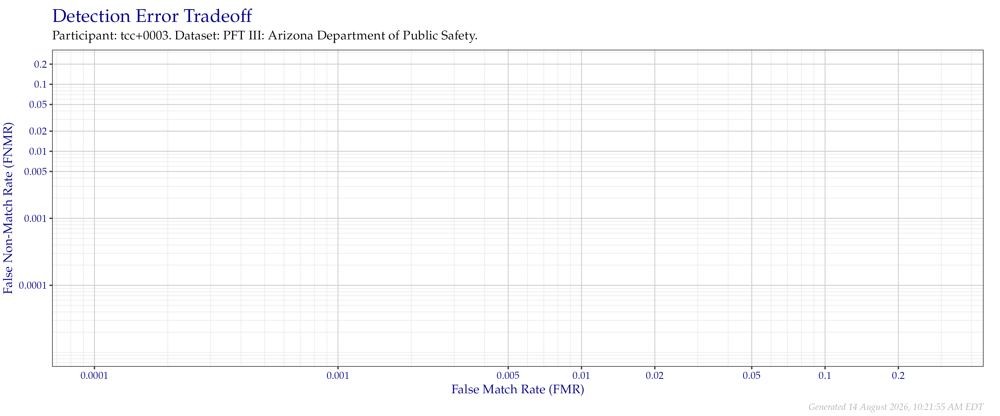
Figure 3.1: Detection error tradeoff of all comparisons from all fingers in the PFT III AZDPS dataset. Numbers in gray indicate the similarity threshold.
| FNMR @ FMR = 0.0001 | FNMR @ FMR = 0.001 | FNMR @ FMR = 0.01 |
|---|---|---|
| 0.8969 | 0.8606 | 0.7971 |
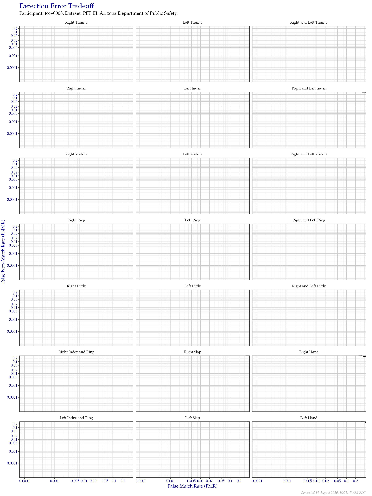
Figure 3.2: Detection error tradeoff of all comparisons from all fingers in the PFT III AZDPS dataset, separated by finger position. Combined finger positions were generated by sum fusion.
| FRGP | FNMR @ FMR = 0.0001 | FNMR @ FMR = 0.001 | FNMR @ FMR = 0.01 |
|---|---|---|---|
| R Thumb | 0.8860 | 0.8291 | 0.7758 |
| R Index | 0.8493 | 0.8005 | 0.7202 |
| R Middle | 0.8660 | 0.8297 | 0.7612 |
| R Ring | 0.8955 | 0.8643 | 0.7981 |
| R Little | 0.9016 | 0.8807 | 0.8360 |
| L Thumb | 0.8866 | 0.8431 | 0.7780 |
| L Index | 0.8560 | 0.8098 | 0.7425 |
| L Middle | 0.8787 | 0.8370 | 0.7668 |
| L Ring | 0.8994 | 0.8727 | 0.8111 |
| L Little | 0.9079 | 0.8847 | 0.8475 |
| R & L Thumb | 0.8182 | 0.7632 | 0.6810 |
| R & L Index | 0.8010 | 0.7488 | 0.6684 |
| R & L Middle | 0.8278 | 0.7826 | 0.7109 |
| R & L Ring | 0.8585 | 0.8278 | 0.7604 |
| R & L Little | 0.8728 | 0.8493 | 0.8064 |
| R Index & Ring | 0.8014 | 0.7548 | 0.6846 |
| L Index & Ring | 0.8129 | 0.7676 | 0.6993 |
| R Slap | 0.7895 | 0.7514 | 0.6831 |
| L Slap | 0.8048 | 0.7651 | 0.6997 |
| R Hand | 0.7560 | 0.7067 | 0.6289 |
| L Hand | 0.7714 | 0.7250 | 0.6452 |
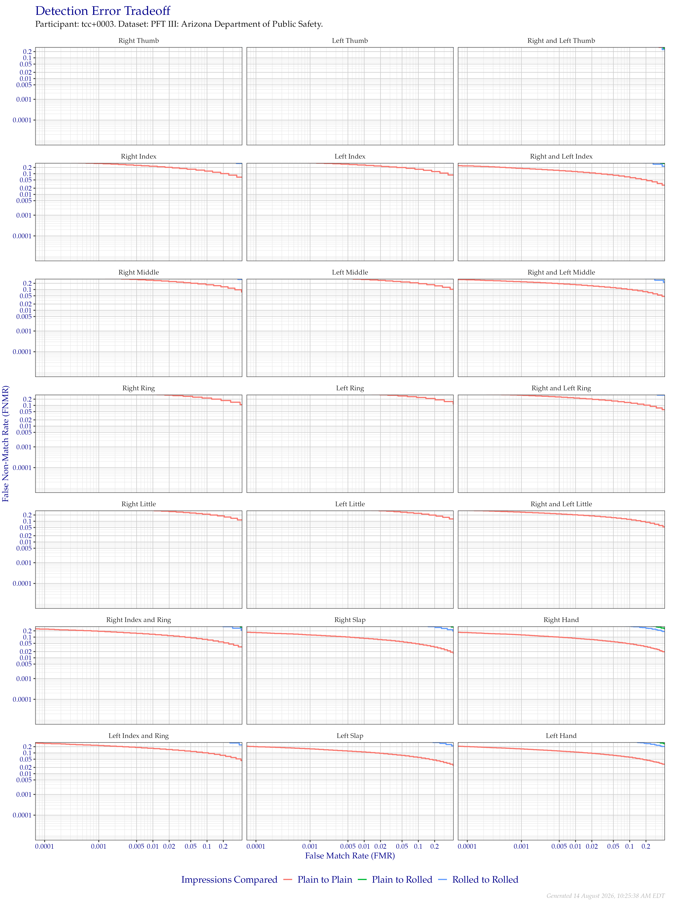
Figure 3.3: Detection error tradeoff of all comparisons from all fingers in the PFT III AZDPS dataset, separated by finger position and impression type. Combined finger positions were generated by sum fusion.
| FRGP | FNMR @ FMR = 0.0001 | FNMR @ FMR = 0.001 | FNMR @ FMR = 0.01 |
|---|---|---|---|
| Plain to Plain | |||
| R Thumb | 0.8816 | 0.8271 | 0.7595 |
| R Index | 0.3917 | 0.3225 | 0.2407 |
| R Middle | 0.4388 | 0.3683 | 0.2957 |
| R Ring | 0.5280 | 0.4656 | 0.3614 |
| R Little | 0.5066 | 0.4283 | 0.3459 |
| L Thumb | 0.8702 | 0.8233 | 0.7540 |
| L Index | 0.4420 | 0.3487 | 0.2751 |
| L Middle | 0.4939 | 0.4116 | 0.3200 |
| L Ring | 0.5528 | 0.4730 | 0.3750 |
| L Little | 0.5294 | 0.4598 | 0.3611 |
| R & L Thumb | 0.8066 | 0.7531 | 0.6590 |
| R & L Index | 0.2430 | 0.1889 | 0.1336 |
| R & L Middle | 0.3012 | 0.2425 | 0.1835 |
| R & L Ring | 0.3867 | 0.3206 | 0.2363 |
| R & L Little | 0.3461 | 0.2801 | 0.2120 |
| R Index & Ring | 0.2495 | 0.1968 | 0.1438 |
| L Index & Ring | 0.2929 | 0.2349 | 0.1755 |
| R Slap | 0.1704 | 0.1317 | 0.0894 |
| L Slap | 0.2052 | 0.1603 | 0.1152 |
| R Hand | 0.1669 | 0.1270 | 0.0892 |
| L Hand | 0.2032 | 0.1567 | 0.1110 |
| Plain to Rolled | |||
| R Thumb | 0.8688 | 0.8161 | 0.7563 |
| R Index | 0.9042 | 0.8636 | 0.7837 |
| R Middle | 0.9303 | 0.8967 | 0.8433 |
| R Ring | 0.9596 | 0.9334 | 0.8863 |
| R Little | 0.9745 | 0.9569 | 0.9140 |
| L Thumb | 0.8711 | 0.8209 | 0.7629 |
| L Index | 0.9122 | 0.8704 | 0.8074 |
| L Middle | 0.9279 | 0.8926 | 0.8370 |
| L Ring | 0.9607 | 0.9344 | 0.8993 |
| L Little | 0.9802 | 0.9655 | 0.9266 |
| R & L Thumb | 0.8028 | 0.7406 | 0.6690 |
| R & L Index | 0.8477 | 0.7955 | 0.7173 |
| R & L Middle | 0.8812 | 0.8353 | 0.7653 |
| R & L Ring | 0.9271 | 0.8964 | 0.8471 |
| R & L Little | 0.9581 | 0.9323 | 0.8871 |
| R Index & Ring | 0.8665 | 0.8184 | 0.7302 |
| L Index & Ring | 0.8664 | 0.8153 | 0.7376 |
| R Slap | 0.8446 | 0.7962 | 0.7124 |
| L Slap | 0.8571 | 0.8095 | 0.7275 |
| R Hand | 0.7767 | 0.7139 | 0.6325 |
| L Hand | 0.7898 | 0.7359 | 0.6464 |
| Rolled to Rolled | |||
| R Thumb | 0.8743 | 0.8209 | 0.7497 |
| R Index | 0.8231 | 0.7660 | 0.6815 |
| R Middle | 0.8100 | 0.7622 | 0.6788 |
| R Ring | 0.8687 | 0.8121 | 0.7477 |
| R Little | 0.8962 | 0.8514 | 0.8028 |
| L Thumb | 0.8592 | 0.8152 | 0.7472 |
| L Index | 0.8304 | 0.7738 | 0.7104 |
| L Middle | 0.8261 | 0.7807 | 0.7182 |
| L Ring | 0.8927 | 0.8412 | 0.7793 |
| L Little | 0.9089 | 0.8806 | 0.8211 |
| R & L Thumb | 0.8015 | 0.7462 | 0.6658 |
| R & L Index | 0.7516 | 0.6864 | 0.6010 |
| R & L Middle | 0.7316 | 0.6746 | 0.6005 |
| R & L Ring | 0.8072 | 0.7495 | 0.6676 |
| R & L Little | 0.8446 | 0.8044 | 0.7242 |
| R Index & Ring | 0.7364 | 0.6710 | 0.5802 |
| L Index & Ring | 0.7384 | 0.6813 | 0.6025 |
| R Slap | 0.6829 | 0.6201 | 0.5374 |
| L Slap | 0.6953 | 0.6358 | 0.5602 |
| R Hand | 0.6413 | 0.5786 | 0.4767 |
| L Hand | 0.6667 | 0.5918 | 0.4952 |
3.2 Los Angeles County Sheriff’s Department
The Los Angeles County Sheriff’s Department (LASD) dataset consists of plain and rolled impressions of all ten fingers, captured with a mixture of ink and optical devices. Figure 3.4 and Table 3.4 show the DET of all fingers not compared in other PFT subsets. This data is separated by finger position in Figure 3.5 and Table 3.5 and again by impression type in Figure 3.6 and Table 3.6. Curves made by combinations of fingers were generated by sum fusion.
Figure 3.4: Detection error tradeoff of all comparisons from all fingers in the PFT III LASD dataset. Numbers in gray indicate the similarity threshold.
| FNMR @ FMR = 0.0001 | FNMR @ FMR = 0.001 | FNMR @ FMR = 0.01 |
|---|---|---|
| 0.8761 | 0.8429 | 0.7899 |
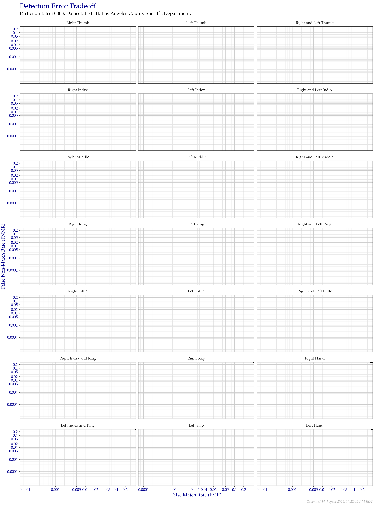
Figure 3.5: Detection error tradeoff of all comparisons from all fingers in the PFT III LASD dataset, separated by finger position. Combined finger positions were generated by sum fusion.
| FRGP | FNMR @ FMR = 0.0001 | FNMR @ FMR = 0.001 | FNMR @ FMR = 0.01 |
|---|---|---|---|
| R Thumb | 0.9415 | 0.9116 | 0.8739 |
| R Index | 0.8114 | 0.7696 | 0.7077 |
| R Middle | 0.8435 | 0.8039 | 0.7445 |
| R Ring | 0.8583 | 0.8259 | 0.7628 |
| R Little | 0.8571 | 0.8227 | 0.7787 |
| L Thumb | 0.9393 | 0.9108 | 0.8741 |
| L Index | 0.8260 | 0.7815 | 0.7314 |
| L Middle | 0.8582 | 0.8189 | 0.7587 |
| L Ring | 0.8725 | 0.8427 | 0.7867 |
| L Little | 0.8790 | 0.8476 | 0.8065 |
| R & L Thumb | 0.9039 | 0.8734 | 0.8091 |
| R & L Index | 0.7695 | 0.7366 | 0.6760 |
| R & L Middle | 0.8044 | 0.7707 | 0.7149 |
| R & L Ring | 0.8301 | 0.7968 | 0.7401 |
| R & L Little | 0.8302 | 0.8016 | 0.7597 |
| R Index & Ring | 0.7623 | 0.7258 | 0.6686 |
| L Index & Ring | 0.7783 | 0.7430 | 0.6847 |
| R Slap | 0.7306 | 0.6990 | 0.6548 |
| L Slap | 0.7546 | 0.7207 | 0.6738 |
| R Hand | 0.7196 | 0.6860 | 0.6341 |
| L Hand | 0.7431 | 0.7058 | 0.6569 |
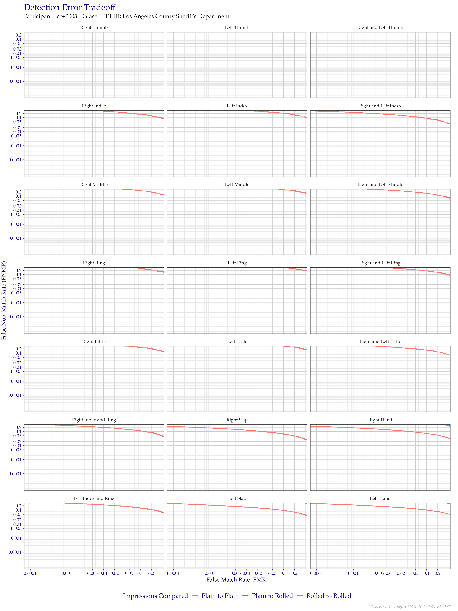
Figure 3.6: Detection error tradeoff of all comparisons from all fingers in the PFT III LASD dataset, separated by finger position and impression type. Combined finger positions were generated by sum fusion.
| FRGP | FNMR @ FMR = 0.0001 | FNMR @ FMR = 0.001 | FNMR @ FMR = 0.01 |
|---|---|---|---|
| Plain to Plain | |||
| R Thumb | 0.9232 | 0.8894 | 0.8568 |
| R Index | 0.4790 | 0.3899 | 0.2992 |
| R Middle | 0.5596 | 0.4848 | 0.3908 |
| R Ring | 0.6107 | 0.5249 | 0.4299 |
| R Little | 0.5992 | 0.5135 | 0.4101 |
| L Thumb | 0.9224 | 0.8828 | 0.8497 |
| L Index | 0.5012 | 0.4269 | 0.3361 |
| L Middle | 0.6029 | 0.5277 | 0.4465 |
| L Ring | 0.6478 | 0.5737 | 0.4676 |
| L Little | 0.6544 | 0.5811 | 0.4697 |
| R & L Thumb | 0.8756 | 0.8421 | 0.7820 |
| R & L Index | 0.3011 | 0.2478 | 0.1756 |
| R & L Middle | 0.4249 | 0.3552 | 0.2707 |
| R & L Ring | 0.4842 | 0.4070 | 0.3066 |
| R & L Little | 0.4508 | 0.3762 | 0.2875 |
| R Index & Ring | 0.3370 | 0.2792 | 0.2037 |
| L Index & Ring | 0.3909 | 0.3167 | 0.2451 |
| R Slap | 0.2354 | 0.1807 | 0.1293 |
| L Slap | 0.2882 | 0.2285 | 0.1659 |
| R Hand | 0.2340 | 0.1862 | 0.1341 |
| L Hand | 0.2926 | 0.2322 | 0.1661 |
| Plain to Rolled | |||
| R Thumb | 0.9514 | 0.9276 | 0.8960 |
| R Index | 0.9651 | 0.9423 | 0.8899 |
| R Middle | 0.9756 | 0.9486 | 0.9093 |
| R Ring | 0.9856 | 0.9708 | 0.9489 |
| R Little | 0.9896 | 0.9783 | 0.9630 |
| L Thumb | 0.9508 | 0.9272 | 0.8950 |
| L Index | 0.9665 | 0.9452 | 0.9051 |
| L Middle | 0.9736 | 0.9525 | 0.9251 |
| L Ring | 0.9857 | 0.9767 | 0.9579 |
| L Little | 0.9936 | 0.9867 | 0.9744 |
| R & L Thumb | 0.9189 | 0.8907 | 0.8260 |
| R & L Index | 0.9424 | 0.9118 | 0.8405 |
| R & L Middle | 0.9548 | 0.9248 | 0.8706 |
| R & L Ring | 0.9784 | 0.9584 | 0.9255 |
| R & L Little | 0.9892 | 0.9780 | 0.9560 |
| R Index & Ring | 0.9464 | 0.9149 | 0.8601 |
| L Index & Ring | 0.9513 | 0.9218 | 0.8700 |
| R Slap | 0.9395 | 0.9066 | 0.8479 |
| L Slap | 0.9456 | 0.9169 | 0.8626 |
| R Hand | 0.9155 | 0.8703 | 0.7911 |
| L Hand | 0.9190 | 0.8815 | 0.8038 |
| Rolled to Rolled | |||
| R Thumb | 0.9200 | 0.8880 | 0.8307 |
| R Index | 0.9062 | 0.8608 | 0.8055 |
| R Middle | 0.8942 | 0.8428 | 0.7764 |
| R Ring | 0.9290 | 0.8986 | 0.8636 |
| R Little | 0.9473 | 0.9257 | 0.8865 |
| L Thumb | 0.9237 | 0.8963 | 0.8436 |
| L Index | 0.9171 | 0.8768 | 0.8199 |
| L Middle | 0.9128 | 0.8820 | 0.8297 |
| L Ring | 0.9499 | 0.9256 | 0.8802 |
| L Little | 0.9696 | 0.9432 | 0.9078 |
| R & L Thumb | 0.8695 | 0.8328 | 0.7528 |
| R & L Index | 0.8642 | 0.8089 | 0.7398 |
| R & L Middle | 0.8472 | 0.7953 | 0.7175 |
| R & L Ring | 0.8961 | 0.8743 | 0.8048 |
| R & L Little | 0.9324 | 0.9016 | 0.8493 |
| R Index & Ring | 0.8475 | 0.7838 | 0.7074 |
| L Index & Ring | 0.8676 | 0.8198 | 0.7490 |
| R Slap | 0.7990 | 0.7533 | 0.6568 |
| L Slap | 0.8482 | 0.7990 | 0.7244 |
| R Hand | 0.7788 | 0.7119 | 0.6121 |
| L Hand | 0.8109 | 0.7559 | 0.6603 |
3.3 Port of Entry, BioVisa Application
The Port of Entry/BioVisa Application (POE+BVA) dataset consists of plain impressions of index fingers. Figure 3.7 and Table 3.7 show the DET of all fingers not compared in other PFT subsets. This data is separated by finger position in Figure 3.8. Curves made by combinations of fingers were generated by sum fusion.
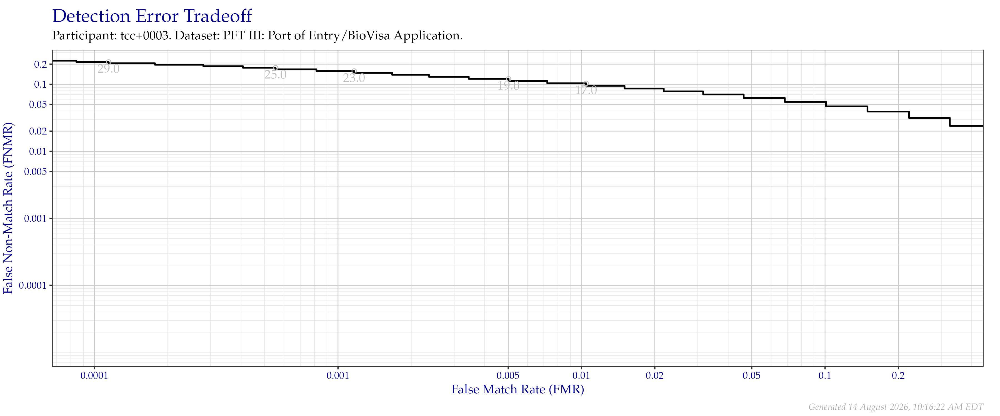
Figure 3.7: Detection error tradeoff of all comparisons from all fingers in the PFT III POE+BVA dataset Numbers in gray indicate the similarity threshold.
| FNMR @ FMR = 0.0001 | FNMR @ FMR = 0.001 | FNMR @ FMR = 0.01 |
|---|---|---|
| 0.2255 | 0.1672 | 0.112 |
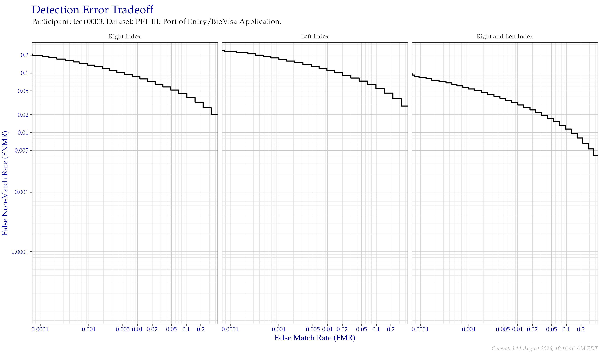
Figure 3.8: Detection error tradeoff of comparisons from the PFT III POE+BVA dataset, separated by finger position. Combined finger positions were generated by sum fusion.
| FRGP | FNMR @ FMR = 0.0001 | FNMR @ FMR = 0.001 | FNMR @ FMR = 0.01 |
|---|---|---|---|
| R Index | 0.2088 | 0.1447 | 0.0946 |
| L Index | 0.2413 | 0.1795 | 0.1198 |
| R & L Index | 0.0882 | 0.0574 | 0.0347 |
3.4 US VISIT #2
The US VISIT #2 (VISIT2) dataset consists of plain impressions of index fingers and are similar to POE+BVA. Figure 3.9 and Table 3.9 show the DET of all fingers not compared in other PFT subsets. This data is separated by finger position in Figure 3.10. Curves made by combinations of fingers were generated by sum fusion.
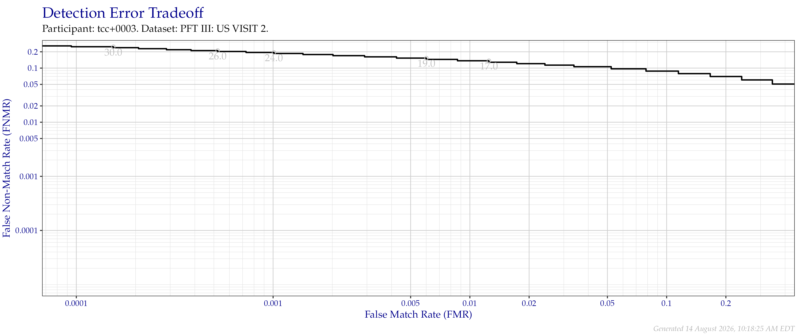
Figure 3.9: Detection error tradeoff of all comparisons from all fingers in the PFT III VISIT2 dataset. Numbers in gray indicate the similarity threshold.
| FNMR @ FMR = 0.0001 | FNMR @ FMR = 0.001 | FNMR @ FMR = 0.01 |
|---|---|---|
| 0.2572 | 0.2026 | 0.1448 |
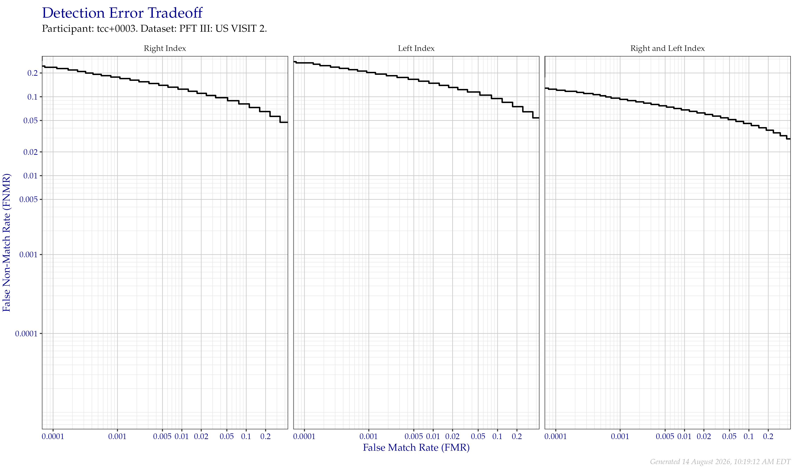
Figure 3.10: Detection error tradeoff of comparisons from the PFT III VISIT2 dataset, separated by finger position. Combined finger positions were generated by sum fusion.
| FRGP | FNMR @ FMR = 0.0001 | FNMR @ FMR = 0.001 | FNMR @ FMR = 0.01 |
|---|---|---|---|
| R Index | 0.2447 | 0.1849 | 0.1321 |
| L Index | 0.2782 | 0.2115 | 0.1574 |
| R & L Index | 0.1284 | 0.0960 | 0.0709 |
3.5 IARPA Nail-to-Nail
In September 2017, IARPA held a fingerprint data collection as part of the Nail to Nail Fingerprint Challenge. Participating Challengers deployed devices to capture a rolled-equivalent print. Approximately two-thirds of the ten-print data collected was released to the public as NIST Special Database 302, with the rest being sequestered at NIST for evaluations like PFT III.
Information about the Challenge can be found in NIST IR 8210. Descriptions of the devices described by the device codes in the following figures and tables can be found in NIST TN 2007.
3.5.1 By Device
The following figures and tables show the DET of all comparisons from select devices in the IARPA N2N Challenge. All probe devices imaged natively at 500 PPI, except for J, R, and U, which imaged at 1 000 PPI. The reference device, V, also imaged natively at 1 000 PPI. When these higher resolution devices are shown at 500 PPI, they were downsampled using NIST Fingerprint Image Resampler (NFIR).
Figure 3.11 and Table 3.11 show results with 500 PPI probes against 1 000 PPI references. Figure 3.12 and Table 3.12 show the same probe images against reference images downsampled to the same resolution. Figure 3.13 and Table 3.13 show native 1 000 PPI to 1 000 PPI comparisons for supported devices.
Figure 3.11: Overall detection error tradeoff of comparisons from the PFT III IARPA N2N dataset, using probe images at 500 PPI and reference images at their native 1 000 PPI resolution.
| Device | FNMR @ FMR = 0.0001 | FNMR @ FMR = 0.001 | FNMR @ FMR = 0.01 |
|---|---|---|---|
| A | 0.9866 | 0.9794 | 0.9532 |
| B | 0.9821 | 0.9770 | 0.9540 |
| C | 0.9530 | 0.9305 | 0.9057 |
| E | 0.9723 | 0.9592 | 0.9250 |
| F | 0.9740 | 0.9624 | 0.9408 |
| J | 0.9845 | 0.9751 | 0.9534 |
| K | 1.0000 | 0.9988 | 0.9931 |
| M | 1.0000 | 0.9985 | 0.9947 |
| P | 0.9927 | 0.9780 | 0.9658 |
| R | 0.9872 | 0.9777 | 0.9480 |
| S | 0.9836 | 0.9759 | 0.9492 |
| U | 0.9281 | 0.9020 | 0.8579 |
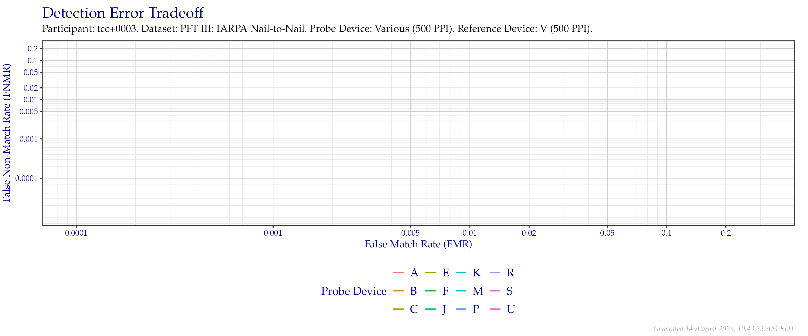
Figure 3.12: Overall detection error tradeoff of comparisons from the PFT III IARPA N2N dataset, using probe images at 500 PPI and reference images downsampled to 500 PPI.
| Device | FNMR @ FMR = 0.0001 | FNMR @ FMR = 0.001 | FNMR @ FMR = 0.01 |
|---|---|---|---|
| A | 0.9821 | 0.9717 | 0.9487 |
| B | 0.9830 | 0.9725 | 0.9501 |
| C | 0.9454 | 0.9270 | 0.8922 |
| E | 0.9630 | 0.9549 | 0.9181 |
| F | 0.9711 | 0.9577 | 0.9335 |
| J | 0.9800 | 0.9698 | 0.9463 |
| K | 0.9994 | 0.9983 | 0.9936 |
| M | 1.0000 | 0.9991 | 0.9938 |
| P | 0.9878 | 0.9829 | 0.9707 |
| R | 0.9838 | 0.9669 | 0.9439 |
| S | 0.9774 | 0.9677 | 0.9477 |
| U | 0.9211 | 0.8918 | 0.8447 |
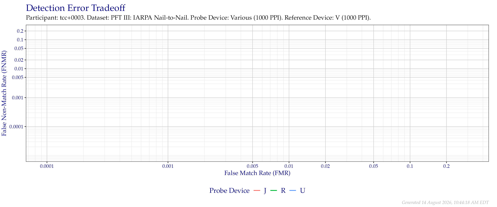
Figure 3.13: Overall detection error tradeoff of comparisons from the PFT III IARPA N2N dataset for devices that supported native 1 000 PPI to 1 000 PPI comparisons.
| Device | FNMR @ FMR = 0.0001 | FNMR @ FMR = 0.001 | FNMR @ FMR = 0.01 |
|---|---|---|---|
| J | 0.9867 | 0.9783 | 0.9556 |
| R | 0.9892 | 0.9804 | 0.9520 |
| U | 0.9325 | 0.9053 | 0.8509 |
3.5.2 Resample Test
PFT III supports encoding of variable resolution images. It is thought that several fingerprint feature extractors downsample imagery to a lower resolution before extracting features. To test this theory, we downsample and compare source and reference imagery both captured natively at 1 000 PPI. All downsampling was performed using NFIR.
Images were compared at all combinations of 100, 250, 300, 333, 500, 600, and 1 000 (native) PPI.
Figure 3.14 and Table 3.14 show match rates against 1 000 PPI references. Figure 3.15 and Table 3.15 show match rates against 600 PPI downsampled references. Figure 3.16 and Table 3.16 show match rates against 500 PPI downsampled references. Figure 3.17 and Table 3.17 show match rates against 333 PPI downsampled references. Figure 3.18 and Table 3.18 show match rates against 300 PPI downsampled references. Figure 3.19 and Table 3.19 show match rates against 250 PPI downsampled references. Figure 3.20 and Table 3.20 show match rates against 100 PPI downsampled references.
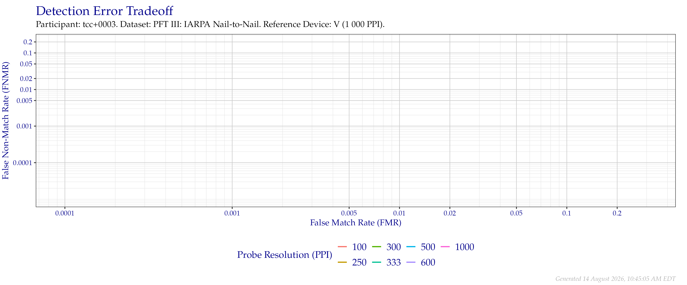
Figure 3.14: Detection error tradeoff of comparisons from the PFT III IARPA N2N dataset using downsampled probe images of various resolutions as compared to 1 000 (native) images.
| Probe Resolution (PPI) | FNMR @ FMR = 0.0001 | FNMR @ FMR = 0.001 | FNMR @ FMR = 0.01 |
|---|---|---|---|
| 100 | 1.0000 | 1.0000 | 1.0000 |
| 250 | 0.9272 | 0.8942 | 0.8477 |
| 300 | 0.9202 | 0.8939 | 0.8456 |
| 333 | 0.9219 | 0.8974 | 0.8491 |
| 500 | 0.9281 | 0.9020 | 0.8579 |
| 600 | 0.9365 | 0.9012 | 0.8482 |
| 1 000 | 0.9325 | 0.9053 | 0.8509 |
Figure 3.15: Detection error tradeoff of comparisons from the PFT III IARPA N2N dataset using downsampled probe images of various resolutions as compared to downsampled 600 PPI images.
| Probe Resolution (PPI) | FNMR @ FMR = 0.0001 | FNMR @ FMR = 0.001 | FNMR @ FMR = 0.01 |
|---|---|---|---|
| 100 | 1.0000 | 1.0000 | 1.0000 |
| 250 | 0.9190 | 0.9050 | 0.8614 |
| 300 | 0.9251 | 0.9044 | 0.8614 |
| 333 | 0.9222 | 0.8985 | 0.8620 |
| 500 | 0.9246 | 0.9009 | 0.8529 |
| 600 | 0.9278 | 0.9032 | 0.8617 |
| 1 000 | 0.9360 | 0.9000 | 0.8468 |
Figure 3.16: Detection error tradeoff of comparisons from the PFT III IARPA N2N dataset using downsampled probe images of various resolutions as compared to downsampled 500 PPI images.
| Probe Resolution (PPI) | FNMR @ FMR = 0.0001 | FNMR @ FMR = 0.001 | FNMR @ FMR = 0.01 |
|---|---|---|---|
| 100 | 1.0000 | 1.0000 | 1.0000 |
| 250 | 0.9132 | 0.8795 | 0.8307 |
| 300 | 0.9120 | 0.8819 | 0.8322 |
| 333 | 0.9158 | 0.8898 | 0.8377 |
| 500 | 0.9211 | 0.8918 | 0.8447 |
| 600 | 0.9208 | 0.8930 | 0.8354 |
| 1 000 | 0.9342 | 0.8950 | 0.8456 |
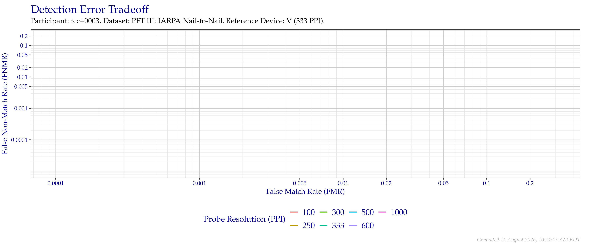
Figure 3.17: Detection error tradeoff of comparisons from the PFT III IARPA N2N dataset using downsampled probe images of various resolutions as compared to downsampled 333 PPI images.
| Probe Resolution (PPI) | FNMR @ FMR = 0.0001 | FNMR @ FMR = 0.001 | FNMR @ FMR = 0.01 |
|---|---|---|---|
| 100 | 1.0000 | 1.0000 | 1.0000 |
| 250 | 0.9050 | 0.8901 | 0.8398 |
| 300 | 0.9149 | 0.8947 | 0.8412 |
| 333 | 0.9161 | 0.8942 | 0.8485 |
| 500 | 0.9137 | 0.8871 | 0.8383 |
| 600 | 0.9199 | 0.8953 | 0.8532 |
| 1 000 | 0.9278 | 0.8889 | 0.8582 |
Figure 3.18: Detection error tradeoff of comparisons from the PFT III IARPA N2N dataset using downsampled probe images of various resolutions as compared to downsampled 300 PPI images.
| Probe Resolution (PPI) | FNMR @ FMR = 0.0001 | FNMR @ FMR = 0.001 | FNMR @ FMR = 0.01 |
|---|---|---|---|
| 100 | 1.0000 | 1.0000 | 0.9997 |
| 250 | 0.9117 | 0.8895 | 0.8395 |
| 300 | 0.9094 | 0.8836 | 0.8450 |
| 333 | 0.9114 | 0.8909 | 0.8468 |
| 500 | 0.9143 | 0.8865 | 0.8365 |
| 600 | 0.9240 | 0.8971 | 0.8421 |
| 1 000 | 0.9225 | 0.8965 | 0.8535 |
Figure 3.19: Detection error tradeoff of comparisons from the PFT III IARPA N2N dataset using downsampled probe images of various resolutions as compared to downsampled 250 PPI images.
| Probe Resolution (PPI) | FNMR @ FMR = 0.0001 | FNMR @ FMR = 0.001 | FNMR @ FMR = 0.01 |
|---|---|---|---|
| 100 | 1.0000 | 1.0000 | 1.0000 |
| 250 | 0.9082 | 0.8833 | 0.8327 |
| 300 | 0.9099 | 0.8845 | 0.8365 |
| 333 | 0.9032 | 0.8912 | 0.8474 |
| 500 | 0.9164 | 0.8798 | 0.8292 |
| 600 | 0.9193 | 0.9006 | 0.8509 |
| 1 000 | 0.9178 | 0.9018 | 0.8497 |
Figure 3.20: Detection error tradeoff of comparisons from the PFT III IARPA N2N dataset using downsampled probe images of various resolutions as compared to downsampled 100 PPI images.
| Probe Resolution (PPI) | FNMR @ FMR = 0.0001 | FNMR @ FMR = 0.001 | FNMR @ FMR = 0.01 |
|---|---|---|---|
| 100 | 1 | 1 | 1.0000 |
| 250 | 1 | 1 | 1.0000 |
| 300 | 1 | 1 | 1.0000 |
| 333 | 1 | 1 | 0.9997 |
| 500 | 1 | 1 | 1.0000 |
| 600 | 1 | 1 | 1.0000 |
| 1 000 | 1 | 1 | 1.0000 |